보스 테마 원화 · 16종보스 테마 원화 · 16종
배경과 보스를 합친 정지 시안. 사진을 누르면 원본 크기로 열립니다.
배경: 제공 사진의 UI·캐릭터 제거 및 가림 영역 복원. 보스: MSW 원본 확대 합성(스우·더스크는 사진 복원).
발록·혼테일·피아누스는 발판·로프와 전경을 정돈한 승인 배경입니다. 승인된16종을 게임 액션 테마로 연결했습니다. 이 페이지는 정지 원화 보기이며, 모션은 게임의 프로필 설정 → 테마 → 액션에서 확인합니다.
전체 비교판 열기01 · 자쿰의 제단
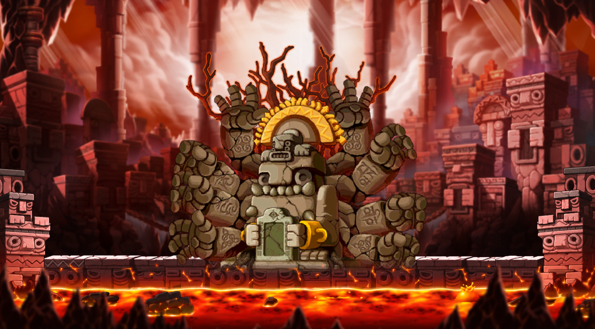
02 · 금지된 제단
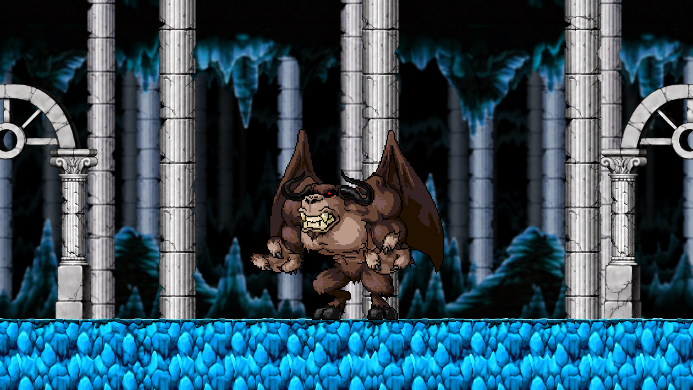
03 · 피아누스의 동굴
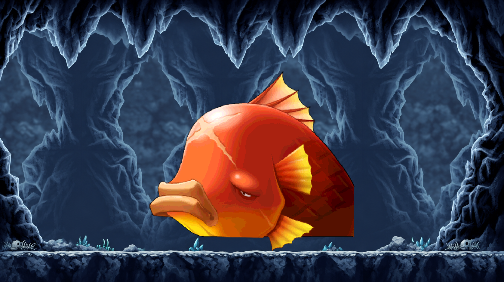
04 · 생명의 동굴
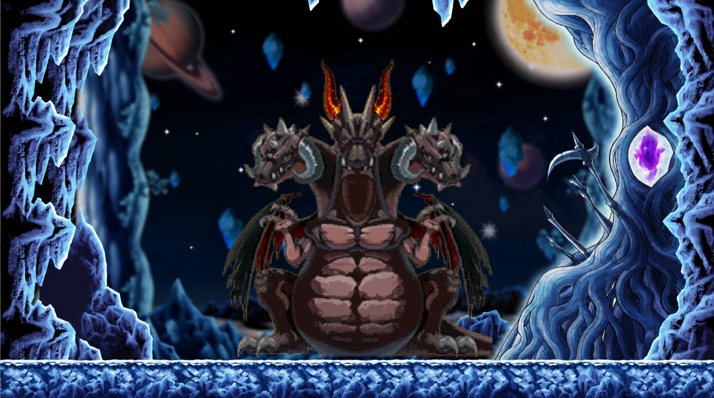
05 · 신들의 황혼
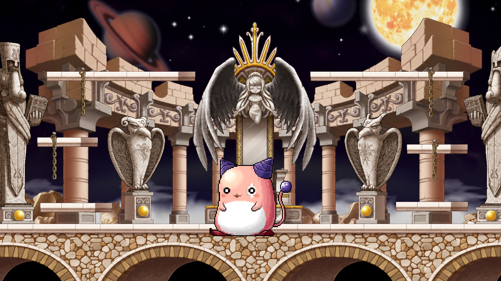
06 · 블랙헤븐 코어
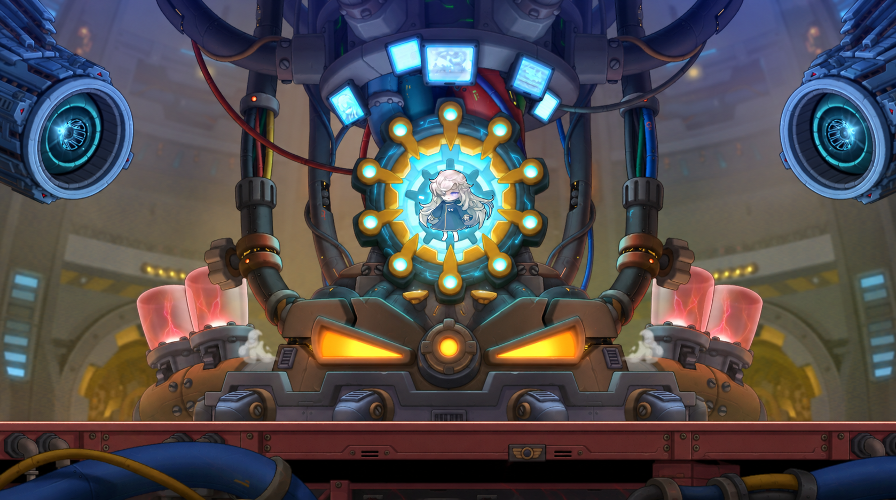
07 · 세계수 정상
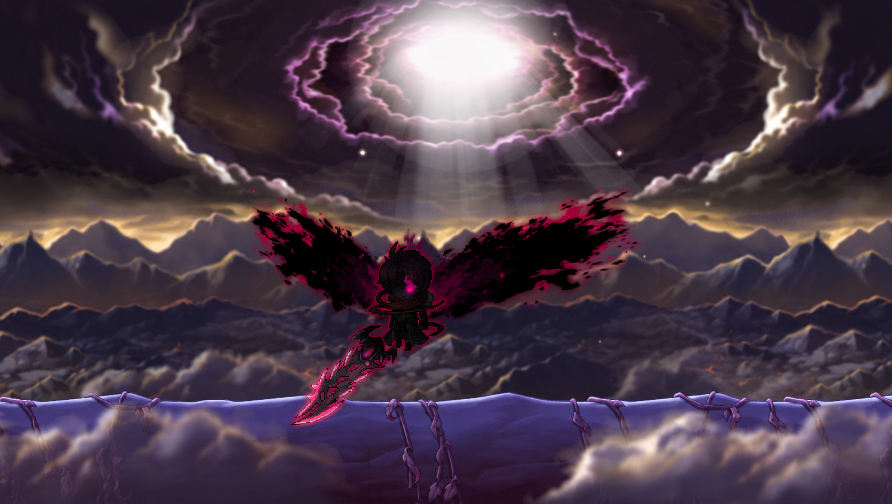
08 · 무너지는 시계탑
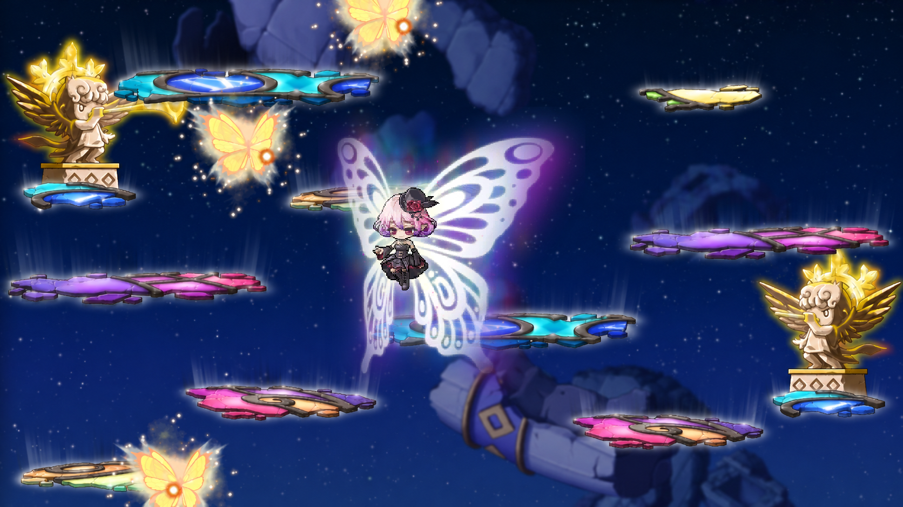
09 · 회절의 회랑
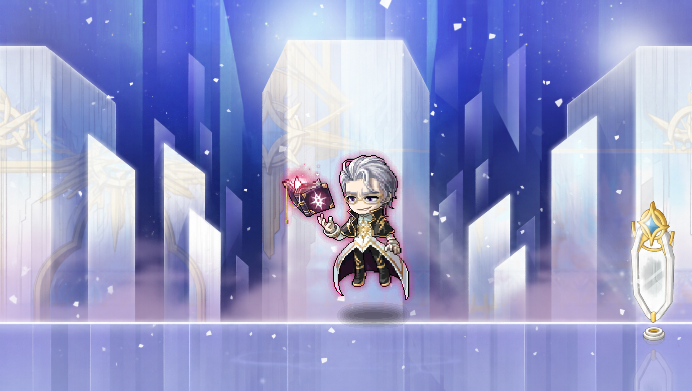
10 · 공허의 눈
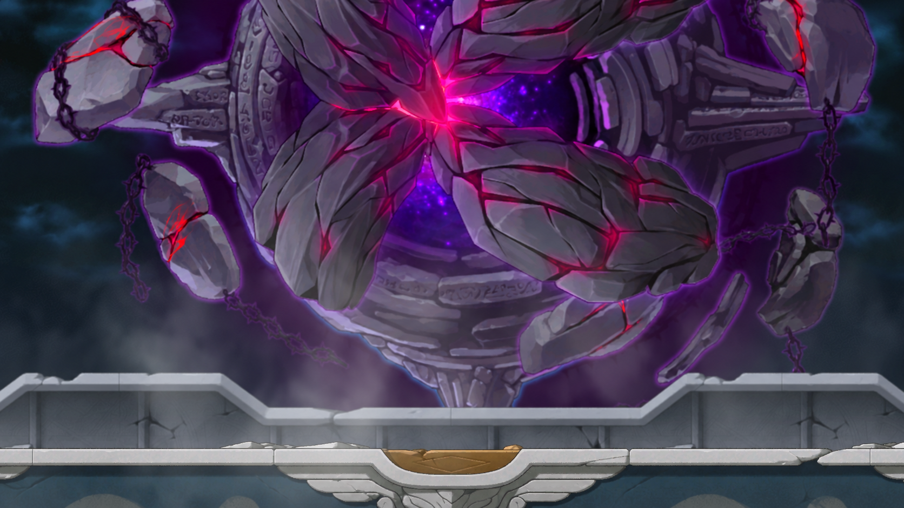
11 · 욕망의 제단
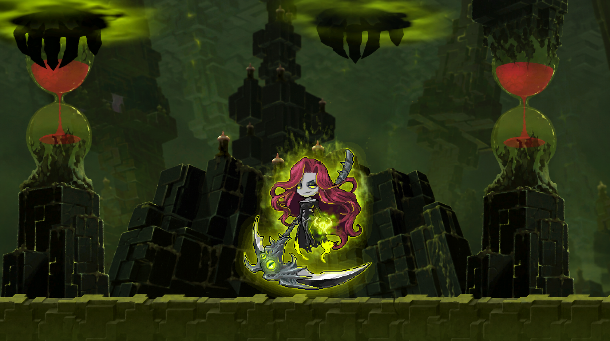
12 · 끝에 가까운 곳
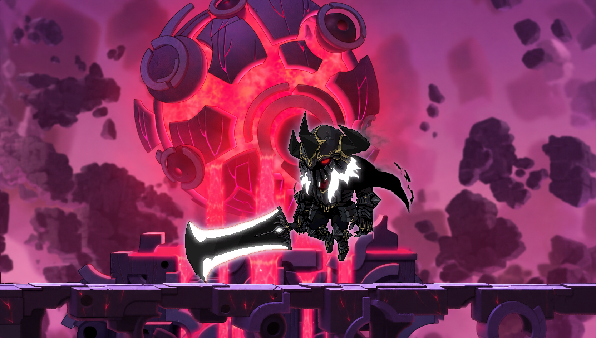
13 · 어둠의 신전
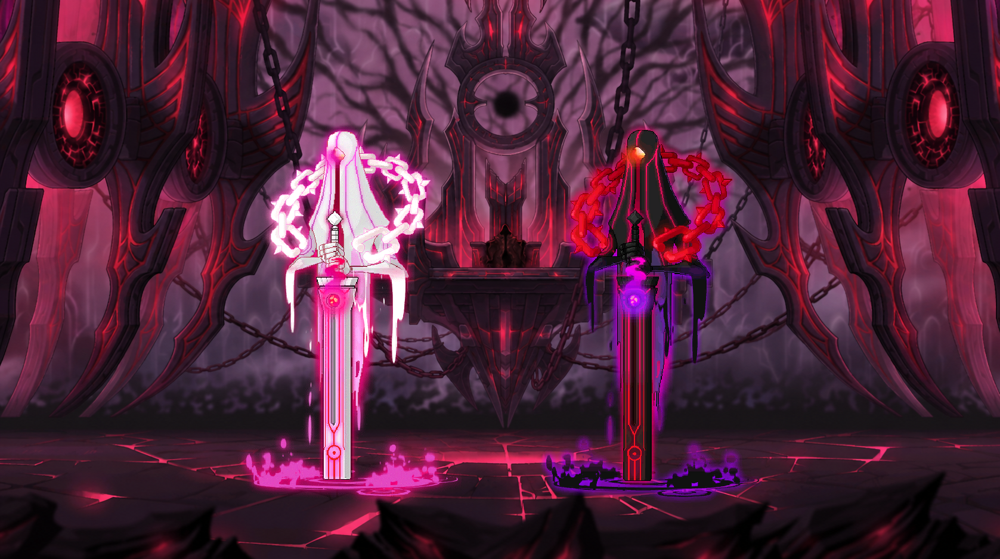
14 · 어둠의 왕좌
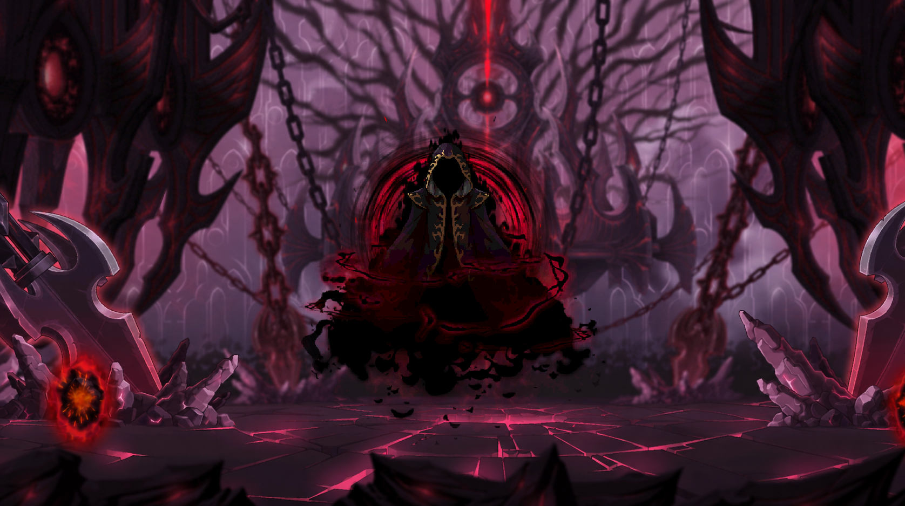
15 · 시작과 끝의 경계
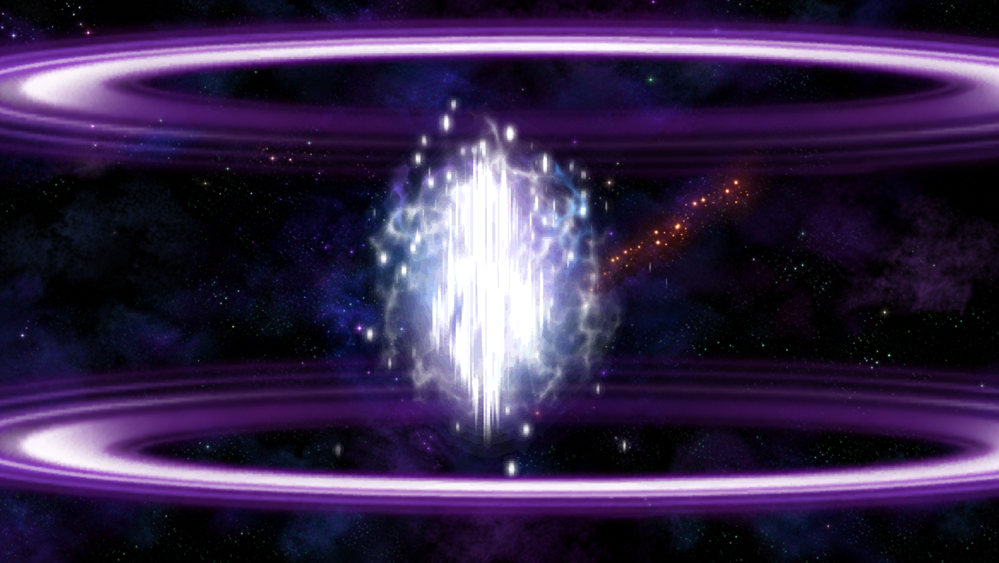
16 · 존재하지 않는 공간
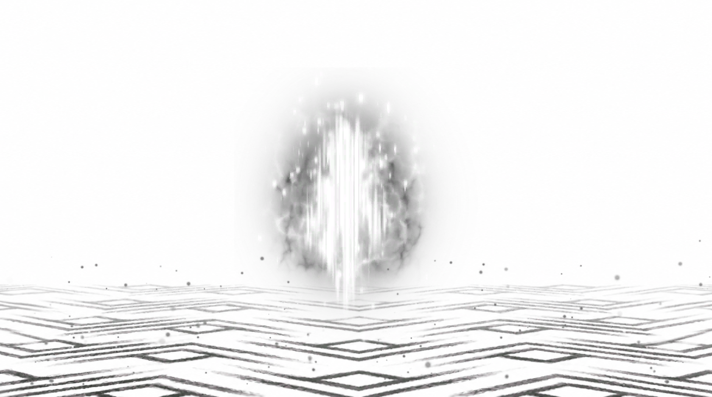